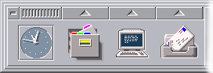
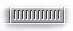
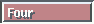

- The left side
- The Central panel
- The right side

The XFCE Front Panel is the main part of XFCE...
The XFCE Front Panel is
divided into 3 parts :
{kind=link}
1) The Left side

As seen above, the left part displays a clock, and 3 icons.
The clock as no special function, but the icons are used to visually
associate a shell command line to an item.
| To modify the icons, or associate a command to an icon,click on the corresponding icon with the right mouse button. This will open a dialog box that will let you change the desired parameters. | |
| Use this button to close the panel.
If you use XFwm, this should log you off. |
|
|  | Click here to move the panel arround. The position of the panel is saved with the configuration. |
| Those buttons open or close the Popup Menus |
 |
These four buttons labelled One, Two, Three, Four let you switch the
virtual desktop.
As shown, you can have up to 4 different desktops. Each desktop acts just like a new screen where you can open and iconify windows. The current active desktop is the one with the pushed button (For example, Desktop One was active when the snapshot above has been taken) |
| To change the label associated with a desktop, just click on the button with the right mouse button. This will open a dialog box and let you redefine the label. | |
| The lock icon is just another icon that you should associate with a lock screen utility. XFCE does not feature any lock capabilities. | |
| The information icon displays the XFCE logo and the licence agreement. | |
| This icon open the setup dialog box. | |
| the QUIT button is equivalent to this one , and closes XFCE. |

| To change the icons, or associate a command to an icon,click on the corresponding icon with the right mouse button. This will open a dialog box that will let you change the desired parameters. | |
| Those buttons open or close the Popup Menus | |
| Click here to move the panel arround. The position of the panel is saved with the configuration. | |
| Use this button to iconify the panel. |